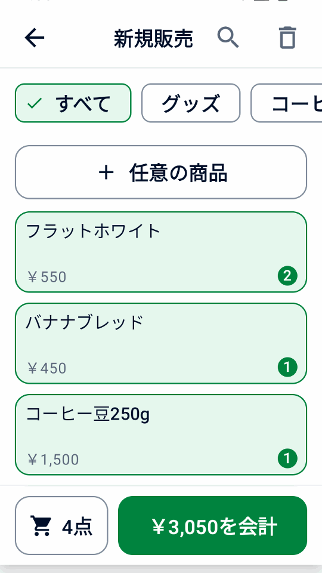
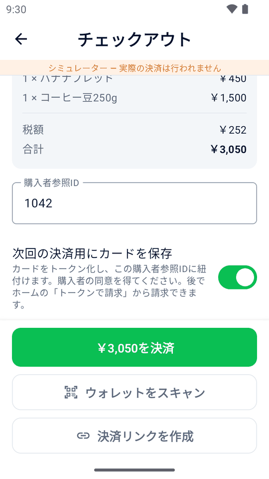
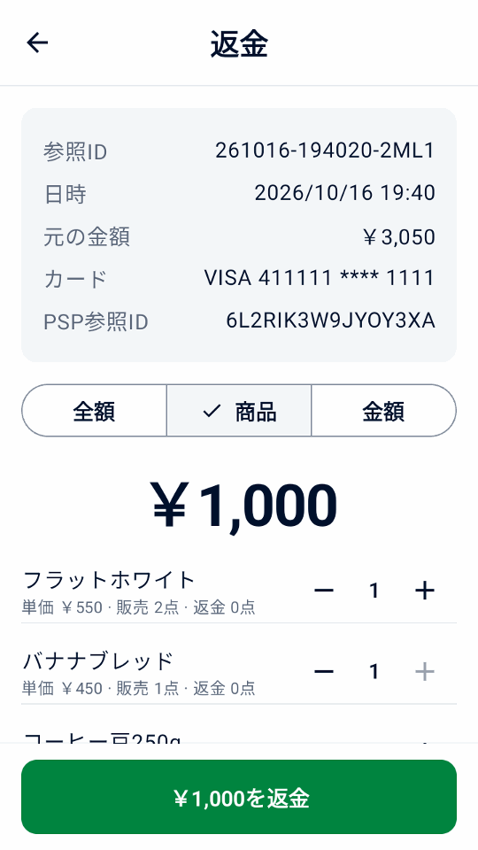

クイックスタート
前提条件を確認し、インストール、Adyen への接続、テストを進めます。
無料・オープンソース · Adyen Android 決済端末で直接動作
Adyen Android 端末で販売、決済、領収書の発行、返金まで行えます。Android タブレットやスマートフォンと端末、または Tap to Pay でも利用できます。
前提条件を確認し、インストール、Adyen への接続、テストを進めます。
決済、返金、領収書、一日の精算を行います。
結果不明、拒否、端末ペアリング、ネットワーク、プリンターの問題を解決します。
店舗、イベント、配達、訪問サービスで、商品、決済、領収書、返金を管理できます。
アプリは無料ですが、Adyen の決済手数料はかかります。商品、設定、履歴は各デバイスに保存されます。QR 転送は一度限りのコピーで、自動同期は行いません。 デバイスとデータ.
対応する端末では、一部承認、購入者向け入力、Giving、手入力決済も使えます。利用する構成の Adyen機能を確認し、ローカル履歴と端末の合計を照合してください。
価格、カテゴリー、バーコード、税率を商品ごとに管理。検索、絞り込み、スキャン、任意の金額入力ができます。
端末そのもので Adyen のカード決済やウォレット決済を受け付けられます。タブレットやスマートフォンから、端末や Tap to Pay で受け付けることもできます。
店舗情報と返金用 QR コードを含む領収書を印刷。メール送信や、タブレット・スマートフォンからの共有もできます。
端末の代わりに決済リンクも送れます。購入者は QR コードを読み取るかメールのリンクを開き、Adyen の決済ページで支払います。
領収書の QR コードをスキャンして、全額、商品単位、指定金額で返金。元の決済に必ず紐づきます。
予約やレンタルの保証金を確保。後から決済を確定したり、金額を調整したり、確保を解除したりできます。
対応する端末で決済前にチップを選ぶか、印刷した領収書に記入し、後でキャプチャできます。
税率を自由に設定し、税込価格か会計時の加算かを選択。Adyen 対応の通貨を使えます。
管理者PINで設定を、別のマネージャーPINで決済後の操作を保護します。パスワードとキーは暗号化します。

商品をタップするか金額を入力。

合計を確認し、お客様に支払いを依頼して承認を待ちます。参照番号の入力とカードの保存は任意です。
設定に応じて、印刷、メール送信、共有で領収書を渡します。

領収書をスキャンして返金内容を選択。
日計を確認し、販売、返金、予約金を数回のタップで見つけられます。
端末にインストールすれば、ほかのハードウェアも運用するバックエンドも不要です。タブレットやスマートフォンでは、お手持ちの端末や Tap to Pay と組み合わせて使えます。
Android スマートフォンやエミュレーターで内蔵シミュレーターを試せます。決済端末は不要です。
アプリをダウンロードし、Adyen Customer Area から端末に配布（またはタブレットやスマートフォンにインストール）して、セットアップヘルパーでキーを読み取ります。ガイドで手順を確認できます。
Adyen Android 端末で会計を完結するか、タブレットやスマートフォンでネットワーク端末、クラウド端末、Tap to Pay を使えます。 要件と構成の選択を参照してください。印刷にはプリンター、スキャンにはカメラが必要です。
アプリは無料で、MIT ライセンスのオープンソースです。Adyen の決済手数料は別途かかります。
いいえ。Adyen が開発、推奨、サポートするものではありません。本番運用前に Adyen TEST 環境で確認してください。アプリと Adyen の質問の窓口は 問い合わせをご覧ください。
しません。商品、設定、取引履歴は各デバイスに残ります。QR 転送は商品と設定のコピーで、履歴の転送や変更の継続同期ではありません。デバイスとデータ を参照してください。
サーバーは不要ですが、すべての実決済構成に Checkout API の認証情報が必要です。他のキーは決済先によります。デバイスに暗号化して保存するため、Adyen のサーバー保管の推奨とのトレードオフがあります。接続設定とそこでの安全上の案内に従ってください。